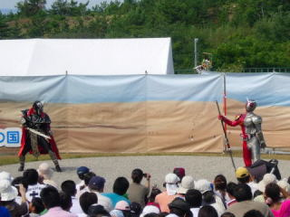

こどもの国で仮面ライダーW（ダブル）ショー
2009/09/21
こどもの国で仮面ライダーWショーがしていました。屋外のイベント広場でやってたんですが、会場が広くていいですね。
スーパーとかのイベントだとステージが狭いので、あまり大きい動きがないんですが、ここの会場は広いのでキャラクターのアクションが大きく、見ごたえがありました。
客席も広々していて良かったです。勾配のついた芝生だったので、前の人の頭でステージが見にくいなんてことがあまりなかったです。スペースが広いので、見にくかったら見やすい場所に移動できるので快適です。
（ステージの前付近はさすがに混んでますが、離れると人と人とのスペースが広かったです。）

次は10/11にそれいけ！アンパンマン ショーがあるみたいなので、良かったらどうそ。
こどもの国内の屋台で揚げ餅が販売していたんですが、揚げたお餅にソースがかかってて、揚げ豆腐のような、お煎餅のような味がして美味しかったです。